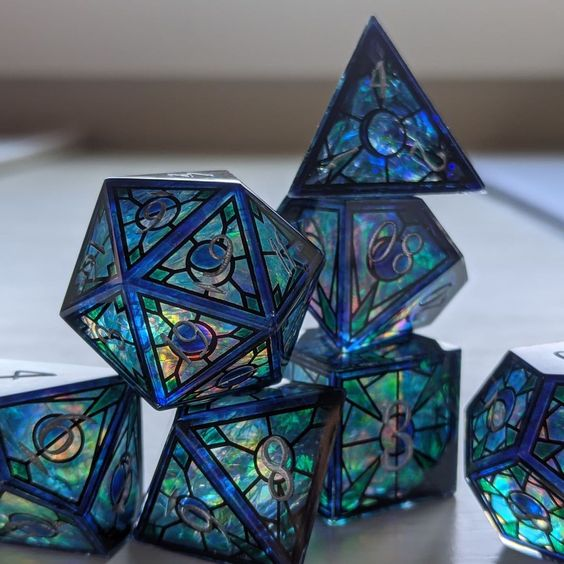

Кубы в Dungeons & Dragons
В Dungeons & Dragons существует несколько типов кубов, каждый из которых используется для различных игровых действий. Каждый куб имеет свои особенности и назначения
Таблица кубов
| Тип куба | Количество граней | Использование |
|---|---|---|
| d4 | 4 | Используется для небольшого урона (например, от метательных оружий) |
| d6 | 6 | Стандартный куб, часто используется в играх |
| d8 | 8 | Используется для средних атак |
| d10 | 10 | Используется для мощных атак и некоторых магий |
| d12 | 12 | Используется для мощных ударов, например, мечей |
| d20 | 20 | Главный куб для определения успеха действий |